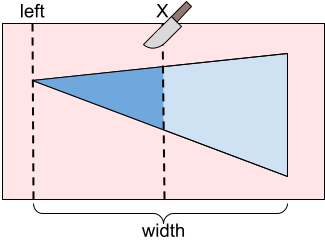
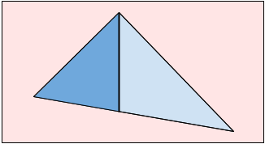
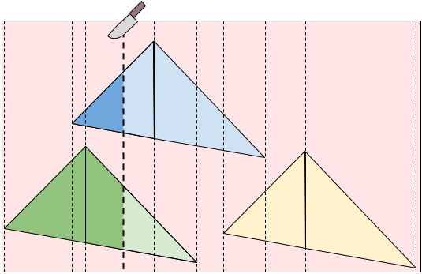

Let's first consider a case where we have only one icing patch with a vertical edge on the right having enjoyment values $$$\mathbf{A}$$$ and $$$\mathbf{B}$$$. If our vertical cut line is all the way to the left of the triangle, we would get $$$0$$$ enjoyment and our twin would get $$$\mathbf{B}$$$ enjoyment. If our cut line is to the right of the triangle, we would get $$$\mathbf{A}$$$ enjoyment and our twin would get $$$0$$$ enjoyment.

Otherwise, our cut is somewhere in the middle of the triangle. In this case, we would get $$$\mathbf{A} \cdot P(X)$$$ enjoyment and our twin would get $$$\mathbf{B} \cdot (1 - P(X))$$$ enjoyment where $$$P(X)$$$ is a value between 0 and 1 representing the proportion of the triangle that is to the left of a cut line at position $$$X$$$.
We can calculate $$$P(X)$$$ by considering similar triangles. Let $$$T_X$$$ be the triangle that is to the left of our cut line when cutting at $$$X$$$. We can notice that $$$T_X$$$ and our full triangle are similar triangles. This means that the ratio between the width and height of $$$T_X$$$ is the same as the ratio for the full triangle. So, given a cut location $$$X$$$, the width and height of $$$T_X$$$ are both $$$\frac{X - \text{left}}{\text{width}}$$$ of the full triangle's width and height respectively. Therefore, we can calculate $$$P(X)$$$ using the following formula:
$$$$P(X) = \left(\frac{X - \text{left}}{\text{width}} \right) ^2$$$$
Notice that $$$P(X)$$$ is a quadratic (polynomial of degree 2). With this, we can write the formulas for our enjoyment and our twin's enjoyment as polynomials in terms of $$$X$$$:
$$$$\text{Our enjoyment} = \mathbf{A} \cdot \left(\frac{X - \text{left}}{\text{width}} \right) ^2$$$$ $$$$\text{Twin's enjoyment} = \mathbf{B} \cdot \left(1 - \left(\frac{X - \text{left}}{\text{width}} \right) ^2\right)$$$$
The value we care about is the difference between these enjoyments. So, we can take the difference between enjoyments and solve for the minimum absolute value within a given range of our cut X-coordinate (from the left of the triangle to the right of the triangle). We can do this by checking the following:
We can know whether the function crosses $$$0$$$ by checking whether the sign at the two endpoints is different. In case the extreme value is within the range, we need to check whether that sign is different from endpoints as well.
Note that our triangle mold might not have a vertical edge. In this case, we can split the triangle in two parts and solve for the left and right sides separately.

The formula for the right side is slightly different but very similar to that used for the left. So, we can calculate the proportion, $$$P(X)$$$, for a triangle with a vertical edge on the left as follows:
$$$$P(X) = 1 - \left(\frac{\text{left} + \text{width} - X}{\text{width}} \right) ^2$$$$
For the full problem, we have many icing patches. If we look at all unique X-coordinates of the vertices representing the triangular icing patches, we can notice that if we cut somewhere between two adjacent X-coordinates, each triangle is either always:

Therefore, for every pair of adjacent X-coordinates, we can add the constant enjoyments from the triangles that are always either to the left or to the right of the cut line to the quadratic functions from the triangles that are being cut. This means that the function $$$D(X)$$$ that represents the difference between enjoyments if we cut at $$$X$$$ is a piece-wise polynomial of degree no more than two. Between every pair of adjacent X-coordinates, we can solve for the minimum absolute value of the difference between our and our twin's enjoyment. Our final answer is then the minimum across all X-coordinate ranges.
Using a sweep-line technique, we can maintain the polynomials representing our and our twin's enjoyments. Because we need to sort the points by X-coordinate, our overall solution requires $$$O(\mathbf{N} \log \mathbf{N})$$$ operations for sorting and $$$O(\mathbf{N})$$$ operations on fractions. Keep in mind that the numbers for the numerator and denominator might not fit into 64 bit integers. Notice that the size of those numbers grows logarithmically in the size of the input, so $$$O(\mathbf{N} \log \mathbf{N})$$$ operations is a reasonable approximation of the overall time complexity of the algorithm.
Because of the $$$O(\mathbf{N} \log \mathbf{N})$$$ complexity mentioned in the previous paragraph, this problem started out as the same statement but intended to be solved using floating point. However, as illustrated by the fact that it needs fractions with integers that do not fit in 128 bits, the precision was a big problem. The amount of restriction all variables needed to keep the precision issues workable would have made a solution that simply iterates through all triangles for every range and does a ternary search usable. Such a solution can be guessed without understanding the polynomials we explained. Using fractions was a way to require solutions to understand those polynomials. Setting a small value for $$$\mathbf{N}$$$ allows using unbounded integers without worrying about the additional running time. Making all the triangles the same shape also helps with this: it keeps the size of the fractions from getting too big.